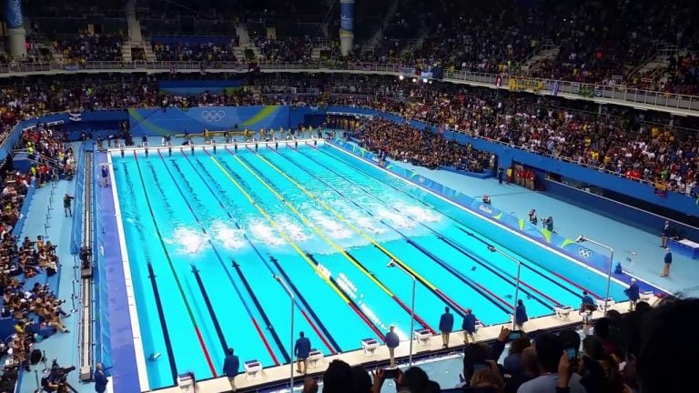
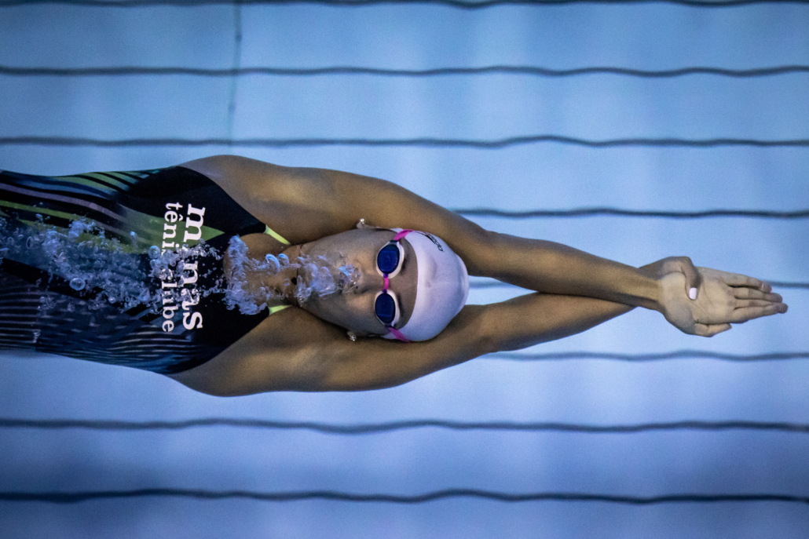

Regras de dimensões da piscina

As dimensões de uma piscina olímpica são de 50 x 25 metros, com 3 metros de profundidade.
As provas podem ser praticadas tanto em espaços abertos quanto fechados.
Há competições internacionais que usam também as piscinas curtas, que possuem 25 metros
de comprimento e 20 metros de largura.
As piscinas são divididas em raias, demarcados por uma faixa no fundo e/ou por material
flutuante.
Em piscinas olímpicas, cada raia possui 2,5 metros de largura. Já nas curtas, essa medida
é de 2 metros.
Cada piscina possui oito raias para competição, além de uma raia livre adicional de cada
lado. Essas raias livres podem ser usadas caso haja empate no tempo de classificação do 8º lugar.
Idades e categorias das competições de natação do Brasil e internacional

| CBDA |
| Categoria |
Idade |
| Mirim I |
9 anos |
| Mirim II |
10 anos |
| Petiz I |
11 anos |
| Petiz II |
12 anos |
| Infantil I |
13 anos |
| Infantil II |
14 anos |
| Juvenil I |
15 anos |
| Juvenil II |
16 anos |
| Júnior I |
17 anos |
| Júnior II |
18 e 19 anos |
| ESCOLAR NACIONAL |
| Categoria |
Idade |
| Jogos Escolares Brasileiros JEBS |
12 a 14 anos |
| Jogos da Juventude |
15 a 17 anos |
| NATAÇÃO ESCOLAR INTERNACIONAL |
| Categoria |
Idade |
| Jogos Sul-Americanos Escolares |
12, 13 e 14 anos |
| Gimnasíades |
Sub 15, 13, 14 e 15 anos |
| Gimnasíades |
16, 17 e 18 anos |
| CONSANAT |
| Categoria |
Idade |
| Campeonato Sul-Americano Juvenil A |
14 15 anos |
| Campeonato Sul-Americano Juvenil B |
16, 17 E 18 anos |
| PANAMSPORT |
| Categoria |
Idade |
| Jogos Panamericanos Junior |
até 21 anos |
| Jogos Sul-Americanos da Juventude |
14 a 17 anos |
| WORD AQUATICS |
| Categoria |
Idade |
| Mundial Júnior |
4 a 18 anos |
| COI |
| Categoria |
Idade |
| Jogos Olímpicos da Juventude |
15 a 18 anos |
Ir para o topo